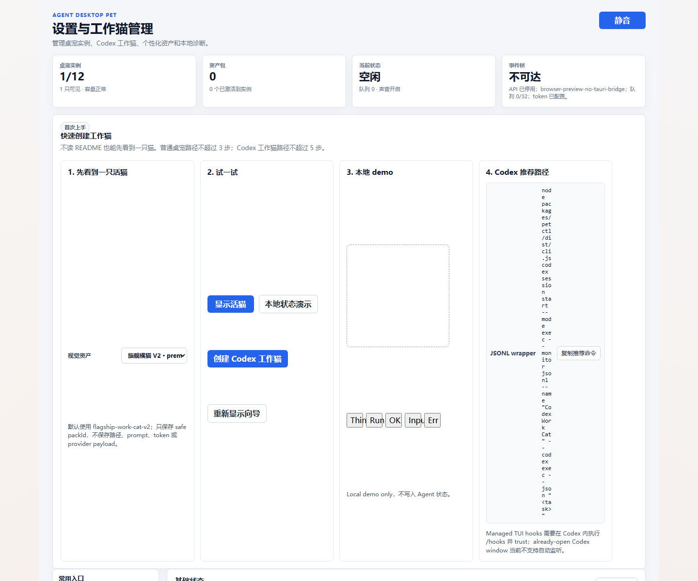
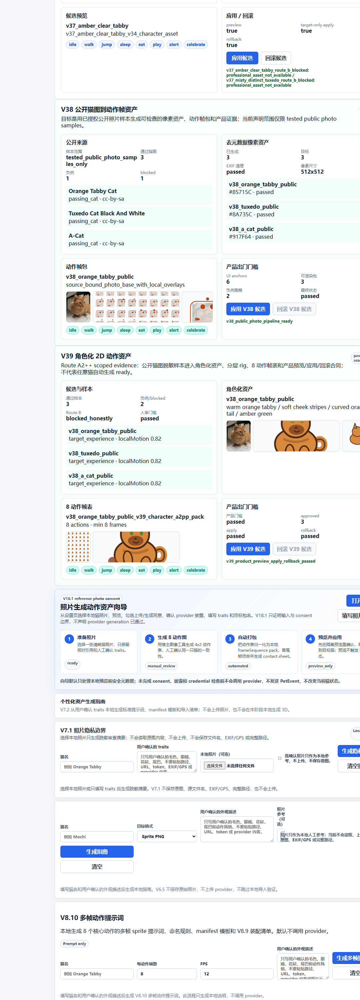
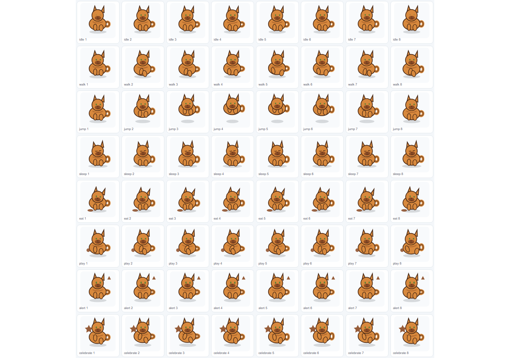
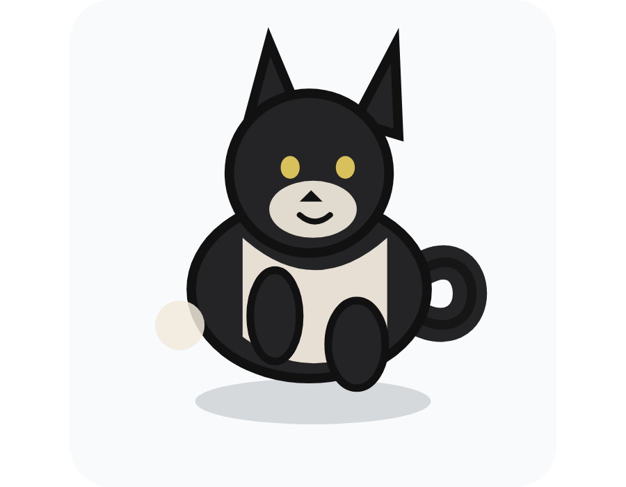

当前实现能证明公开猫图样本经过角色化资产、分层 rig、8 动作帧表和产品门槛的 scoped pass；不能证明任意用户猫照片自动生成高质量动作资产，也不能声明 Petdex parity。
V39 阶段性自动化验收报告
本报告基于原始 PRD/active 文档、V39 PRD、目标架构、当前代码和本轮真实命令执行结果生成。结论是 passed scoped：V39 可以声明 tested public-photo samples 的 Route A2++ 角色化 2D 动作资产 scoped pass。
不声明任意猫自动生成高质量动作资产、不声明 provider integration、Route B verified、Petdex parity、3D、production、Windows 或 cross-platform ready。
阶段结论passed scoped
通过样本3 个公开猫图样本
负例/阻塞样本2 个
剩余产品风险中风险
主要审计发现
V39 面板展示通过候选、动作帧表和 apply/rollback 门槛；但当前 UI 中 V39 应用/回滚按钮保持 disabled，验收结论不能扩大为用户已可一键安装任意 V39 资产到运行桌宠。
资产不再只是整图 transform-only 或照片卡片叠加，但仍是确定性 SVG/frameSequence；如果目标是显著接近专业项目资产，需要继续引入人工美术或真实 source-bound 专业资产路线。
本轮阶段报告改用 headless Chrome 截图证据和相对路径图片；旧报告更适合在应用预览服务路径下查看，不能作为单独 file-open 视觉证据。
目标架构与当前实现
目标架构
- 公开猫图样本进入安全来源/脱敏边界。
- 生成同猫身份的角色化 2D 资产，不复用照片卡片外观。
- 建立 head/body/ears/paws/tail/eyes-expression 分层 rig。
- 由 A2++ frame composer 生成 8 个动作、每动作至少 8 帧。
- 通过 target-experience rubric、产品预览、应用/回滚门槛和 evidence scan。
当前实现
apps/desktop/src/assets/v39-characterized-action-assets.ts实现样本、合同、rig、动作帧、门槛和扫描。apps/desktop/src/main.ts在设置页展示 V39 面板、角色化资产和动作帧表。apps/desktop/public/v39/提供通过样本的 SVG 角色、contact sheet、animated preview。scripts/v39_*.mjs生成各阶段 evidence 与 final gate。docs/V39.x/保存 PRD、目标架构、计划、验收、审计与 evidence。
命令与端到端验收结果
| 命令/审计项 | 结果 | 证据摘要 |
|---|---|---|
pnpm --filter desktop test |
passed | 71 suites / 336 tests passed; V39 characterized action assets 7 tests passed |
pnpm --filter desktop check |
passed | TypeScript noEmit passed |
pnpm --filter @agent-desktop-pet/petctl test |
passed | 10 suites / 71 tests passed |
pnpm --filter desktop exec node --import tsx ../../scripts/v30_semantic_animation_gate_smoke.mjs |
passed | transform-only weak baseline rejected; semantic candidate accepted |
pnpm --filter desktop exec node --import tsx ../../scripts/v39_8_final_gate_smoke.mjs |
passed scoped | 3 passing public-photo samples, 2 negative/blocked records, Route B recorded as blocked_honestly |
pnpm --filter desktop build |
passed | Vite production build completed |
drawio XML/page audit |
passed | 8 Chinese pages, within the <= 8 page requirement |
claim scan |
passed with contextual hits | Forbidden phrases only appeared in forbidden/not-ready/scanner-rule context |
security scan |
passed | No token, Authorization value, raw provider payload, raw HTTP payload, EXIF/GPS, or full workspace path detected |
用户场景截图证据
截图通过 Windows Chrome headless 模式采集，没有打开可见浏览器窗口，也没有进行桌面焦点抢占。报告打开动作本身会按用户要求显示浏览器窗口。




测试覆盖与缺口
| 功能点 | 覆盖情况 | 缺口 |
|---|---|---|
| 拒绝 V38 风格照片卡片/transform-only 弱动作 | V39 单测和 final gate 覆盖 | 无阻塞缺口 |
| 公开样本进入角色化资产合同 | 3 个通过样本 + 负例/blocked 样本覆盖 | 不能推广到任意猫 |
| 分层 rig 与 8 动作帧表 | 单测、smoke、截图覆盖 | 审美质量仍需人工或专业路线提高 |
| 产品预览/应用/回滚 | 合同和 UI 状态覆盖 | V39 UI 按钮 disabled，未完成真实最终用户一键应用体验 |
| 文档概念一致性 | PRD/架构/计划/evidence 均限定 scoped pass 和 forbidden claims | 历史文档存在大量 forbidden claim 文本，需持续保持语境限定 |
验收评价
阶段性结论：V39 scoped acceptance 可以通过，但项目整体仍不是高质量任意猫图生动作资产产品。
当前比“难看的简单线条猫”和整图变形路线更接近目标：已经有同猫来源、角色化资产、分层部件和多动作帧表。但若目标是让普通用户明显喜欢、接近专业项目资产或稳定支持任意猫照片，下一阶段必须继续做真实用户照片导入、可点击应用安装、人工/专业资产增强路线和更强视觉审美验收。